@Entity
public class Ticket {
@Id private long id;
}Moduł 6b: JPA
Spis treści
- Mapowanie encji
- Konfiguracja dostępu do bazy danych
- Cykl życia obiektów w bazie danych
Budowanie zapytań w JPA
- Criteria API
- Wsparcie dla transakcji
- Mapowanie relacji po stronie bazy danych
- Dziedziczenie w JPA
- Zdarzenia zwrotne i klasy nasłuchujące
- Blokowanie obiektów
Minimalne mapowanie JPA
@javax.persistence.Entitydefiniuje encję@javax.persistence.Iddefiniuje prosty klucz główny- Klucz główny będzie uzupełniany ręcznie
@Idmożna umieścić nad polem lub nad geterem – determinuje to mapowanie kolejnych pól w jeden wybrany sposób
Modyfikacja mapowań
@Entity
public class Ticket implements Serializable {
@Id
private long id;
private String movieTitle;
}- Klasa zostanie jest mapowana do tabeli ticket
- Pole id do kolumny id
- Pole price do kolumny price
- Pole movieTitle do kolumny movietitle
- Typ kolumn zależy od bazy danych i jest dobierany przez usługę EntityManager
Modyfikacja mapowań (2)
@Entity
@Table(name="tickets")
public class Ticket implements Serializable {
@Id
@Column(name="ticket_id")
private long id;
@Column(name="movie_title")
private String movieTitle;
}- Mapowania domyślne można zmodyfikować za pomocą adnotacji
@Columni@Table
Adnotacja @Table
Atrybuty
name
- Wskazuje nazwę tabeli w bazie danych
schema
- Wskazuje nazwę schematu
catalog
- Wskazuje nazwę katalogu, w którym położona jest tabela
uniqueConstraints
- Umożliwia nałożenie więzów unikalności na poszczególne kolumny
Adnotacja @Column
Atrybuty
name
- Wskazuję nazwę kolumny w tabeli
unique
- Wskazuje, czy na kolumnę ma być nałożone ograniczenie unikalności wartości
insertable
- Określa, czy do kolumny mogą być wstawiane wartości
nullable
- Określa, czy kolumna możne zawierać wartości null
updatable
- Określa, czy wartości w kolumnie mogą być aktualizowane
Adnotacja @Column (2)
Atrybuty
length
- Dla kolumn typu znakowego określa długość łańcucha
precision
- Dla kolumn typu zmiennoprzecinkowego określa precyzję przechowywanych wartości
scale
- Wskazuje dokładność dla wartości zmiennoprzecinkowych
columnDefinition
- Część składni SQL odpowiedzialna za definicję kolumny, np.: wskazanie typu
Klucz główny
- Użycie adnotacji
@Iddla pola zakłada, że programista sam nada wartość klucza głównego Można skorzystać z wartości generowanych automatycznie dodając adnotację
@GeneratedValuei wybrać jedną z dostępnych strategii: AUTO, IDENTITY, SEQUENCE, TABLE- Dobór optymalnej strategii zależy od używanego silnika bazy danych
- Nie należy domniemywać że jest to konfiguracja niezależna od bazy danych (z wyjątkiem trybu AUTO)
Klucz główny - strategie
AUTO (domyślnie)
- Usługa utrwalania decyduje o sposobie generowania kluczy na podstawie używanej bazy danych
IDENTITY
- Wymusza na bazie danych używanie specjalnego typu danych przeznaczonego tylko dla kluczy głównych
SEQUENCE
- Oznacza korzystanie z mechanizmu sekwencji, o ile baza danych udostępnia taki mechanizm
TABLE
- Usługa utrwalania korzystać będzie z dodatkowej tabeli, w celu wyznaczenia kolejnej wartości klucza
Klucz główny - sekwencje
- Korzystanie z sekwencji bazodanowej wymaga zdefiniowania generatora kluczy głównych związanego z tą sekwencją – adnotacja
@SequenceGenerator - Zdefiniowany generator należy wskazać jako źródło kluczy głównych poprzez atrybut
@GeneratedValue.generator Atrybuty
@SequenceGenerator- name - Nazwa generatora
- sequenceName - Nazwa sekwencji w bazie danych skojarzonej z generatorem
Klucz główny - sekwencje
@Entity
@Table(name="tickets")
public class Ticket implements Serializable {
@Id
@GeneratedValue(strategy=GenerationType.SEQUENCE,
generator="ticketSequence")
@SequenceGenerator(name="ticketSequence",
sequenceName="tickets_seq")
private long id;
}Złożony klucz główny
- Specyfikacja JPA pozwala również definiować klucze złożone
- Klucz złożony wymaga osobnej klasy oznaczonej jako
@Embeddable - Kolumny odpowiadające kluczowi złożonemu tworzone są w tabeli właściwej dla encji, która korzysta z tego klucza
Złożony klucz główny
@Embeddable
public class UserPK {
private String name;
private String surname;
}
@Entity
public class User {
@EmbeddedId
private UserPK id;
}@Temporal i @Enumerated
public enum TicketType {
CHILD, ADULT
}@Entity
public class Ticket implements Serializable {
@Id @GeneratedValue
private long id;
@Temporal(TemporalType.TIMESTAMP)
private Date timeExpired;
@Enumerated(EnumType.STRING)
private TicketType type;
}@Temporal i @Enumerated
@Temporal– wskazuje, za pomocą jakiego typu danych, będą zapamiętywane dane typówjava.util.Dateorazjava.util.Calendar@Enumerated– mapuje pola typu wyliczeniowego:STRING
- Wartości będą przechowywane w bazie w postaci łańcucha znaków
ORDINAL
- Wartości będą przechowywane w bazie w postaci liczby całkowitej, która odpowiada kolejności wyliczenia
Adnotacja @Transient
- Usługa utrwalania zakłada, że wszystkie właściwości klasy oznaczonej jako @Entity są odwzorowywane w bazie danych
- Aby wykluczyć właściwość z tej zasady, należy oznaczyć ją jako @Transient
Spis treści
- Mapowanie encji
- Konfiguracja dostępu do bazy danych
- Cykl życia obiektów w bazie danych
Budowanie zapytań w JPA
- Criteria API
- Wsparcie dla transakcji
- Mapowanie relacji po stronie bazy danych
- Dziedziczenie w JPA
- Zdarzenia zwrotne i klasy nasłuchujące
- Blokowanie obiektów
Session / EntityManager
Hibernate Session / EntityManager
- Jest pośrednikiem w komunikacji z bazą danych - Data Access Object
- Stanowi warstwę abstrakcji uniezależniającą aplikację od konkretnego źródła danych
- Zmiana źródła danych może się odbywać w sposób transparentny (przydatne w testach)
- Może stanowić podstawową implementację CRUD (Create, Retrieve, Update, Delete)
- Odpowiada za cykl życia encji
Hibernate Session - XML
<bean id="mySessionFactory"
class="o.s.o.hibernate3.annotation.AnnotationSessionFactoryBean">
<property name="dataSource" ref="dataSource" />
<property name="packagesToScan"
value="com.example.dictionary.model" />
<property name="hibernateProperties">
<props>
<prop key="hibernate.dialect">
org.hibernate.dialect.MysqlDialect
</prop>
</props>
</property>
</bean>Hibernate Session - Java
Hibernate3 configuration
@Bean
public AnnotationSessionFactoryBean session(DataSource ds) {
AnnotationSessionFactoryBean session =
new AnnotationSessionFactoryBean();
session.setDataSource(ds);
session.setPackagesToScan(new String[]
{"com.example.dictionary.model"});
Properties props = new Properties();
props.put("hibernate.dialect",
MySQLDialect.class.getName());
session.setHibernateProperties(props);
return session;
}Hibernate Session - Java
Hibernate4 configuration
@Bean
public LocalSessionFactoryBean session(DataSource datasource) {
LocalSessionFactoryBean session =
new LocalSessionFactoryBean();
session.setDataSource(datasource);
session.setPackagesToScan(new String[]
{"com.example.dictionary.model"});
Properties props = new Properties();
props.put("hibernate.dialect",
MySQLDialect.class.getName());
session.setHibernateProperties(props);
return session;
}EntityManager
@Bean
public LocalContainerEntityManagerFactoryBean
entityManagerFactory(DataSource ds) {
LocalContainerEntityManagerFactoryBean emf = new
LocalContainerEntityManagerFactoryBean();
emf.setDataSource(ds);
return emf;
}<bean id="entityManagerFactory"
class="o.s.o.jpa.LocalContainerEntityManagerFactoryBean">
<property name="dataSource" ref="dataSource" />
</bean>EntityManager
persistence.xml
<?xml version="1.0" encoding="UTF-8"?>
<persistence xmlns="http://java.sun.com/xml/ns/persistence"
xmlns:xsi="http://www.w3.org/2001/XMLSchema-instance"
xsi:schemaLocation="http://java.sun.com/xml/ns/persistence http://java.sun.com/xml/ns/persistence/persistence_2_0.xsd"
version="2.0">
<persistence-unit name="pu"
transaction-type="RESOURCE_LOCAL">
<provider>org.hibernate.ejb.HibernatePersistence</provider>
</persistence-unit>
</persistence>Atrybuty Hibernate Session
- hibernate.dialect - wskazuje dialekt SQL, w którym będą generowane zapytania: Oracle, MySQL, MsSQL
- hibernate.show_sql - pokazuje kwerendy SQL generowane przez Hibernate’a
- hibernate.format_sql - czytelnie formatuje wygenerowane kwerendy
hibernate.hbm2ddl.auto – sposób traktowania schematu bazy danych.
- validate
- update
- create
- create-drop
Dostęp do danych
public class HibernateRepository {
@Autowired
SessionFactory mySessionFactory;
public DictionaryWord getSavedWords() {
return mySessionFactory
.openSession()
.get(DictionaryWord.class, 1l);
}
}Dostęp do danych
public class JpaRepository {
@PersistenceContext
EntityManager em;
public DictionaryWord getSavedWords() {
return em.find(DictionaryWord.class, 1l)
}
}Spis treści
- Mapowanie encji
- Konfiguracja dostępu do bazy danych
- Cykl życia obiektów w bazie danych
Budowanie zapytań w JPA
- Criteria API
- Wsparcie dla transakcji
- Mapowanie relacji po stronie bazy danych
- Dziedziczenie w JPA
- Zdarzenia zwrotne i klasy nasłuchujące
- Blokowanie obiektów
Cykl życia encji
- persist() - powoduje dodanie encji do kontekstu utrwalania. Encje tworzymy za pomocą new – tak jak wszystkie inne obiekty w Javie
- save() / saveOrUpdate() - dla Hibernate Session
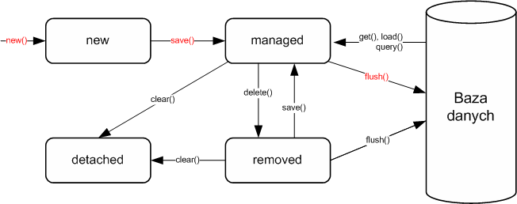
Cykl życia encji (2)
- get(), load() - pobiera encje z kontekstu na podstawie identyfikatora (dla Hibernate Session)
- find(), getReference() – w przypadku EntityManager
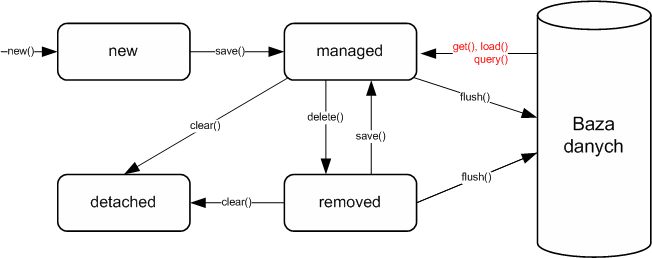
Cykl życia encji (3)
- delete() - usuwa encję z kontekstu (Hibernate Session)
- remove() – metoda EntityManagera
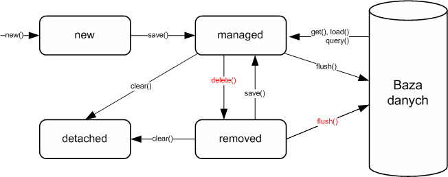
Cykl życia encji (4)
- clear() – odłącza, od kontekstu utrwalania wszystkie zarządzane encje
- Object merge(entity) - przyłącza odłączoną encje do kontekst
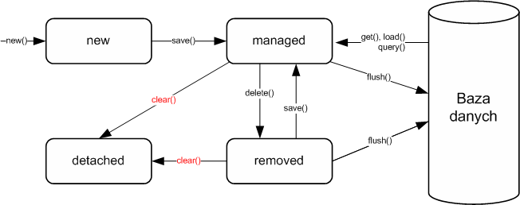
Obiekty detached
- Były zarządzane przez sesję lecz zostały odłączone (lub sesja została zamknięta)
- Obiekt typu detached może zostać ponownie dołączony do kontekstu
- Wszystkie modyfikacje mogą zostać z powodzeniem zapisane do bazy danych w późniejszym etapie
- Praca z obiektem nie wymaga otwartego połączenie do bazy danych
Spis treści
- Mapowanie encji
- Konfiguracja dostępu do bazy danych
- Cykl życia obiektów w bazie danych
Budowanie zapytań w JPA
- Criteria API
- Wsparcie dla transakcji
- Mapowanie relacji po stronie bazy danych
- Dziedziczenie w JPA
- Zdarzenia zwrotne i klasy nasłuchujące
- Blokowanie obiektów
JPQL
- Język zapytań JPA
- Analogiczny do języka SQL jednak nie zależny od konkretnego typu bazy danych
Umożliwia elastyczniejsze pobieranie danych niż metoda entityManager.find()
- filtrowanie
- sortowanie
- grupowanie
- agregacja
JPQL (2)
Query query = entityManager
.createQuery("wyrażenie JPQL");
Object single = query.getSingleResult();
List list = query.getResultList();JPQL - operatory
- operatory logiczne (równość, większy, mniejszy, różny od)
- AND, OR, NOT
- operatory matematyczne (plus, minus, iloczyn, iloraz, inkrementacja i dekrementacji)
- . (kropka) - operator nawigacji; zależności od zagłębionych encji
- LIKE; dopasowanie wyrażenia znakowego do wzorce
- BETWEEN
- IN; sprawdzenie czy wartość znajduje się w tablicy
- IS NULL, IS EMPTY
- MEMBER OF; sprawdzenie czy parametr jest elementem kolekcji
JPQL – operatory (2)
SELECT p FROM Person p
from Person where firstName = 'Jakub' and lastName is null
from Person where address.city = 'Gdansk'
from Person where firstName LIKE 'Ja%' from Person where firstName IN ('Jakub', 'Jan')
from Person where 'Jakub' MEMBEROF names`JPQL - funkcje
- lower - zamiana liter na małe
- upper - zamiana liter na wielkie
- trim - usunięcie spacji
- concat - połączenie dwóch łańcuchów znaków
- length - zwraca długość łańcucha znaków
- locate - zwraca pozycję jednego łańcucha w drugim
- substring - zwraca podłańcuch o określonej długości
JPQL – funkcje (2)
from Person where UPPER(firstName) = 'JAKUB'
from Person where LENGTH(address.city) = 5
from Person where CONCAT(firstName, 'NAME') = 'JakubNAME'JPQL – grupowanie
- count - zlicza ilość elementy w zbiorze
- max, min - maksymalna/minimalna wartość
- sum - suma wartości wszystkich pól numerycznych wskazanych przez wyrażenie
- avg - oblicza średnią z wartości pola numerycznego
JPQL – grupowanie (2)
SELECT COUNT(p) FROM Person p
SELECT MAX(p.age) FROM Person p
SELECT AVG(p.age) FROM Person pJPQL – parametry
- parametry nazwane
Person person = entityManager
.createQuery("from Person where firstName = ?1", Person.class)
.setParameter(1, "Jakub")
.getSingleResult();Person person = entityManager
.createQuery("from Person where firstName = :name",
Person.class)
.setParameter("name", "Jakub")
.getSingleResult();JPQL – DTO
- Data Transfer Object – struktura utworzona do przeniesienia danych
- JPQL umożliwia pobranie tylko niektórych elementów z encji
- JPA zwraca wtedy tablice typu Object[]
Object[][] results = entityManager
.createQuery("SELECT p.firstname, p.lastname FROM Person p")
.getResultList()JPQL – DTO (2)
- Wykorzystanie DTO zwiększa czytelność kodu
public class NameDTO {
private String firstName;
private String lastName;
public NameDTO(String firstName, String lastName) {
this.firstName = firstName;
this.lastName = lastName;
}
//..
}JPQL – DTO (3)
NameDTO name = (NameDTO) entityManager
.createQuery("select new " +
"com.example.spring.NameDTO(p.firstName, p.lastName) " +
"from Person p")
.getSingleResult();
System.out.println(name.getFirstName() +
", " + name.getLastName());Zapytania nazwane
@Entity
@NamedQueries({
@NamedQuery(name="User.findAll", query="from User"), (1)
@NamedQuery(name="User.findById",
query="from User u where u.id = :userId")
})
public class User {
//...
}
Query query = em.createNamedQuery("User.findById");
query.setParameter("userId", 1001L);
User user = (User) query.getSingleResult();-
Nazwy zapytań są globalne w obrębie jednostki utrwalania
Criteria API
Alternatywa wobec JPQL
- Początkowo dostępna tylko w Hibernate
- Od JEE6 jest elementem standardu JPA 2
- Criteria to obiektowa reprezentacja zapytania dotyczącego konkretnej encji
Umożliwia stopniowe budowanie dynamicznych zapytań
- Z zachowaniem czytelności
- Z wygodnym Fluent API
Criteria API
List cats = sess.createCriteria(Cat.class)
.add( Restrictions.like("name", "Fritz%") )
.add( Restrictions
.between("weight", minWeight, maxWeight) )
.list();Criteria API - operatory
- operatory logiczne (równość, większy, mniejszy, różny od)
- AND, OR, NOT
- . (kropka) - operator nawigacji; zależności od zagłębionych encji
Restrictions.gt("age", 19)
Restrictions.eq("name", "Fritz")Criteria.add(Restrictions.or (
Restrictions.like("name", "Fritz%"),
Restrictions.isNull("weight") ) )Restrictions.eq("name.firstName", "Fritz")Criteria API - grupowanie
- count - zlicza ilość elementy w zbiorze
- max, min - maksymalna/minimalna wartość
- sum - suma wartości wszystkich pól numerycznych wskazanych przez wyrażenie
- avg - oblicza średnią z wartości pola numerycznego
List results = session.createCriteria(Cat.class)
.setProjection( Projections.projectionList()
.add( Projections.rowCount() )
.add( Projections.avg("weight") )
.add( Projections.max("weight") )
.add( Projections.groupProperty("color") )
).list();Criteria API – example query
- Umożliwia zapytania poprzez przykłady
- Klasa Example umożliwia uogólnianie przykładowego obiektu
session.createCriteria(Cat.class)
.add( Example.create(cat) )
.list();Example.create(cat)
.excludeNone()
.excludeProperty("weight")
.ignoreCase()
.enableLike();Criteria API – problemy
Wydajność zapytania
- JPQL (HQL) daje pewne możliwości kontroli zapytania (optymalizacja)
- Criteria API to pełna wiara w potęgę Hibernate
Wydajność aplikacji
- Zapytania nazwane można z łatwością cache’ować
Utrzymanie
- Zapytania zostają pownownie rozrzucone po kodzie aplikacji
- Zapytania nazwane zawsze zgromadzone w jednym miejscu
Spis treści
- Mapowanie encji
- Konfiguracja dostępu do bazy danych
- Cykl życia obiektów w bazie danych
Budowanie zapytań w JPA
- Criteria API
- Wsparcie dla transakcji
- Mapowanie relacji po stronie bazy danych
- Dziedziczenie w JPA
- Zdarzenia zwrotne i klasy nasłuchujące
- Blokowanie obiektów
Założenia transakcyjności
- atomowość – niepodzielność, udaje się w całości albo wcale
- spójność – nie narusza integralności danych
- izolacja – równolegle transakcje nie widzą zmian przez siebie wprowadzanych
- trwałość – w przypadku awarii, system jest w stanie udostępnić spójne i nienaruszone dane, niezależnie od momentu w którym transakcja została przerwana.
Transakcja aplikacji
- Służą do łączenia kilku operacji i uzależniają końcowy wynik przetwarzania od powodzenia wszystkich operacji objętych transakcją
- Nie muszą dotyczyć tylko operacji bazodanowych
- Gwarantują spójność wykonywanych operacji
Konfiguracja transakcji
- Spring umożliwia automatyczną konfigurację transakcji
- Łączy transakcję z odpowiednim źródłem danych
- Umożliwia zarządzanie transakcjami bezpośrednio w kodzie (poprzez adnotację
@Transactional)
<tx:annotation-driven transaction-manager="txManager" />
<bean id="txManager"
class="o.s.jdbc.datasource.DataSourceTransactionManager">
<property name="dataSource" ref="dataSource" />
</bean>Konfiguracja transakcji (2)
@Configuration
@EnableTransactionManagement
public static class AppConfiguration {
@Bean
public AnnotationSessionFactoryBean session(DataSource ds) {
//..
}
@Bean
public HibernateTransactionManager tx(SessionFactory sf) {
HibernateTransactionManager tx =
new HibernateTransactionManager();
tx.setSessionFactory(factory);
return tx;
}
}Transaction Manager
- Sprawdza czy istnieje aktywna transakcja
- Zarządza zasięgiem transakcji (propagation)
- Zawiesza i wznawia transakcje w zależności od potrzeb
- Sprawdza flagę rollback-only w przypadku zakończenia transakcji
- Odpowiada za wszelkie modyfikację w przypadku nawrotu transakcji
Adnotacja @Transactional
- Zastosowana na poziomie metody obejmuje ją transakcją.
Umożliwia szczegółową konfigurację poprzez szereg atrybutów:
- value: manager transakcji który ma zostać użyty
- propagation: typ transakcji
- isolation: poziom izolacji transakcji
- readOnly: transakcja tylko odczytująca czy obejmuje zarówno operacje odczytu jak i zapisu
- timeout: maksymalny czas trwania transakcji (w sekundach)
- rollback / noRollback: wyjątki powodujące wycofanie (lub nie) transakcji
Adnotacja @Transactional
@Transactional(propagation=Propagation.REQUIRED,
isolation=Isolation.DEFAULT,
timeout=-1,
readOnly=false)Typy transakcji
REQUIRED - operacja zawsze będzie objęta transakcją
- nowo utworzona transakcja
- Wykorzystanie już istniejąca transakcji
- NOT_SUPPORTED - klient nie obsługuje transakcji; istniejąca transakcja jest zawieszana
SUPPORTS - poprawne zachowanie zarówno z jak i bez transakcji.
- równoznaczne atrybutowi REQUIRED – w przypadku istnienia transakcji
- równoznaczne NOT_SUPPORTED – w przypadku braku transakcji
Typy transakcji (2)
- REQUIRES_NEW –dla każdego wywołania metody tworzona jest nowa transakcja.
- MANDATORY – w trakcie wywołania metody transakcja musi być aktywna.
- NEVER - metoda nie może być wywołana w obrębie transakcji
Transakcje typu NESTED
- Typy wprowadzony w Spring Framework – typ nie mający odpowiednika w EJB
- utworzenie zagnieżdżonej transakcji, z wieloma punktami zapisu (ang. save points)
- Wymaga źródła danych zgodnego z JDBC 3.0
- Pozwala na częściowe nawrócenie transakcji (ang. rollback) do najbliższego wewnętrznego punktu zapisu
- Mimo nawrotu transakcja wciąż jest aktywna i działająca.
Spis treści
- Mapowanie encji
- Konfiguracja dostępu do bazy danych
- Cykl życia obiektów w bazie danych
Budowanie zapytań w JPA
- Criteria API
- Wsparcie dla transakcji
- Mapowanie relacji po stronie bazy danych
- Dziedziczenie w JPA
- Zdarzenia zwrotne i klasy nasłuchujące
- Blokowanie obiektów
Wiele obiektów - jedna tabela
- Jeśli tabela przechowuje dane, które należy rozdzielić pomiędzy wiele obiektów, można do tego celu użyć adnotacji
@Embeddedoraz@Embeddable - Pola klasy osadzonej zostaną zmapowane do tabeli związanej z klasą-właścicielem
Kiedy używamy
- Zdenormalizowany model po stronie bazy danych mapujemy na mniejsze obiekty
Wiele obiektów - jedna tabela
@Embeddable
public class Address {
private String city;
private String street;
private String postalCode;
}@Entity
public class User {
@Id
private long id;
@Embedded
private Address address;
}Wiele obiektów - jedna tabela
- Nazwy kolumn odpowiadających właściwościom obiektu osadzanego można zdefiniować za pomocą adnotacji
@Column - Nazwy te można przedefiniować przy pomocy adnotacji
@AttributeOvveridew encji-właścicielu
Wiele obiektów - jedna tabela
@Embeddable
public class Address {
private String street;
@Column(name="postal_code")
private String postalCode;
}Wiele obiektów - jedna tabela
@Entity
public class User {
@Embedded
@AttributeOverrides ({
@AttributeOverride(name="postalCode",
column=@Column(name="user_postal")),
@AttributeOverride(name="street",
column=@Column(name="basic_street"))
})
private Address address;
}Encja z wielu tabel
- Jeśli dane przechowywane w encji mają pochodzić z wielu tabel należy posłużyć się adnotacją
@SecondaryTabledo zadeklarowania dodatkowej tabeli - Właściwości pochodzące z inne tabeli wskazywane są atrybutem
@Column.table - Jeśli zachodzi konieczność zadeklarowania więcej niż jednej dodatkowej tabeli, należy adnotację
@SecondaryTableumieścić w@SecondaryTables
Encja z wielu tabel
@Entity
@SecondaryTable(name="addresses",
pkJoinColumns=@PrimaryKeyJoinColumn(name="id") (1)
)
public class User {
@Column(table="addresses", name="street")
private String street;
@Column(table="addresses", name="city")
private String city;
}-
Łączenie następuję po kluczu głównym w tabeli - nie nadaje się do pobierania danych słownikowych
Encja z wielu tabel (2)
Atrybuty
@SecondaryTablename
- Nazwa dodatkowej tabeli
pkJoinColumns
- Zestaw adnotacji
@PrimaryKeyJoinColumnswskazujących kolumny z dodatkowej tabeli, w względem których ma nastąpić złączenie z tabelą bazową; zazwyczaj jest to klucz główny
- Zestaw adnotacji
Encja z wielu tabel (3)
Atrybuty
@PrimaryKeyJoinColumnsname
- Nazwa kolumny w tabeli dodatkowej, względem której nastąpi złączenie
referencedColumnName
- Nazwa kolumny w tabeli głównej, względem której nastąpi złączenie; domyślnie jest to klucz główny
Relacje pomiędzy obiektami
Typy relacji pomiędzy obiektami
- Jeden – do – jednego
@OneToOne - Wiele – do – jednego
@ManyToOne - Jeden – do – wielu
@OneToMany - Wiele – do – wielu
@ManyToMany
Jeden do jednego
|
|
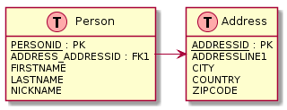
Jeden do jednego (2)
|
|
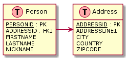
Jeden do jednego (3)
|
|

Jeden do jednego (4)
|
|
Wiele do jednego
|
|
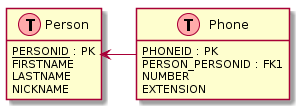
Jeden do wielu
|
|
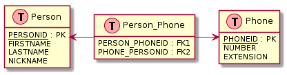
Jeden do wielu (2)
|
|
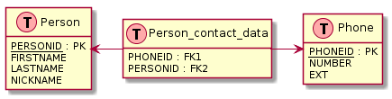
Jeden do wielu (3)
|
|
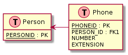
Wiele do wielu
|
|
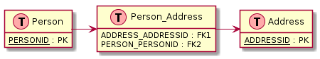
Wiele do wielu (2)
|
|
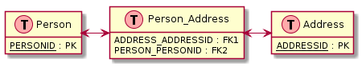
Lazy loading
- Dla encji będących w relacji oznacza, że załadowanie z bazy danych encji powiązanych odbędzie się dopiero w momencie pierwszego dostępu do nich
- Rodzaj ładowania określa atrybut fetch adnotacji
@OneToOne,@OneToMany,@ManyToOne,@ManyToMany, a także@Lobi@Basic Atrybut może przyjmować dwie wartości:
- LAZY: Ładowanie opóźnione (lazy loading)
- EAGER: Wszystkie powiązania ładowane są natychmiast (eager loading)
Lazy loading (2)
- Ładowanie opóźnione możliwe jest tylko wtedy, gdy encja znajduje się w kontekście utrwalania
- Próba uzyskania dostępu do zależności ładowanej z opóźnienie zakończy się zgłoszeniem wyjątku LazyInitException
Kaskadowość
- Określa sposób, w jaki traktowane będą powiązane encje w momencie wywołania jednej z metod
persist(),merge(),remove(),refresh()usługi utrwalania - Sposób ten określa się za pomocą atrybutu cascade adnotacji
@OneToOne,@OneToMany,@ManyToOne,@ManyToMany - Konkretny sposób wskazywany jest przez wartości typu
CascadeType
@Entity
public class User {
@ManyToMany(cascade={
CascadeType.MERGE, CascadeType.PERSIST})
private Collection<Ticket> tickets;
}Kaskadowość (2)
CascadeType.REMOVE- Jeśli usunięty zostanie właściciel relacji, to usunięte zostaną również encje zależne
CascadeType.PERSIST- Jeśli utrwalony zostanie właściciel relacji, to utrwalone zostaną również encje zależne
CascadeType.MERGE- Jeśli właściciel relacji zostanie przyłączony do kontekstu utrwalania, to przyłączone zostaną również encje zależne; jeśli któraś z encji zależny nie była jeszcze utrwalona, to zostanie utrwalona
Kaskadowość (3)
CascadeType.REFRESH- Jeśli właścicielowi relacji zostanie stan z bazy, to stanie się to również z encjami zależnymi
CascadeType.ALL- Wszystkie powyższe jednocześnie
Trochę wątpliwości
- Łatwo stracić panowanie nad kaskadowością
- Ładownie opóźnione powoduje N+1 select problem
Spis treści
- Mapowanie encji
- Konfiguracja dostępu do bazy danych
- Cykl życia obiektów w bazie danych
Budowanie zapytań w JPA
- Criteria API
- Wsparcie dla transakcji
- Mapowanie relacji po stronie bazy danych
- Dziedziczenie w JPA
- Zdarzenia zwrotne i klasy nasłuchujące
- Blokowanie obiektów
Mapowanie dziedziczenia
Są trzy sposoby odwzorowania dziedziczenia
- Single Table per Class Hierarchy
- Table per Class
- Joined Subclass
- Wybór strategii dotyczy całego drzewa hierarchii
Single table
- Tworzona jest jedna tabela dla wszystkich klas
- Tabela zawiera kolumny odpowiadające wszystkim atrybutom wszystkich podklas
Dodatkowa kolumna discriminator określa do której podklasy należy obiekt
- Discriminator nie jest widoczny dla użytkownika, nie jest polem obiektu
- Jego wartość definiowana jest explicite dla każdej klasy w obrębie hierarchii dziedziczenia
Single table (2)
@Entity
@Inheritance(strategy=InheritanceType.SINGLE_TABLE) (1)
@DiscriminatorColumn(name="taskType", (2)
discriminatorType=DiscriminatorType.STRING) (3)
@DiscriminatorValue("simple") (4)
public class Task {
//..
}-
Określenie sposobu dziedziczenia
-
Nazwa kolumny dla pola discriminator
-
Określenie typu (ciąg znaków)
-
Wartość dla danej klasy (ta adnotacja będzie powtarzana w kolejnych klasach)
Single table (3)
- Podklasy są podobne jeżeli chodzi o atrybuty i różnice występują w zachowaniu (metody)
- Podejście (mimo potencjalnego braku elegancji) jest najczęściej używane
- Jeżeli nie wiadomo na którą strategie się decydować, niewiele wiemy o złożoności modelu – single table jest najlepsze
- Wszystkie kolumny muszą być nullable
Table per class
- Każdej klasie odpowiada pojedyncza tabela
- Tabela zawiera komplet atrybutów danego obiektu
- Każda podklasa posiada własny identyfikator
@Entity
@Inheritance(strategy=InheritanceType.TABLE_PER_CLASS)
public class Task {
//..
}Table per class (2)
Kolumna klasy nadrzędnej narzuca nazwy kolumn klasie podrzędnej
- zmiana typu jednego pola w nadklasie powoduje konieczność ręcznego zrobienia tej zmiany we wszystkich podklasach
- Identyfikator nie może być automatycznie generowany
Na poziomie bazy danych nie widać jakiegokolwiek związku pomiędzy encjami
- W przypadku agregacji konieczność wygenerowania n zapytań dla n klas
Joined subclass
- Tabela podklasy zawiera tylko różnice względem nadklasy
- Normalizacja tabel, przejrzystość modelu oraz zachowanie modelu obiektowego
- Klucz główny współdzielony jest pomiędzy nadklasą i podklasą
@Entity
@Inheritance(strategy=InheritanceType.JOINED)
public class Task {
//..
}Joined subclass (2)
- Wierne odwzorowanie modelu obiektowego w bazie danych
- Przejrzyste modelowanie pomiędzy poszczególnymi podklasami – każda tabela ma swój klucz
Pobranie wszystkich wartości z całej hierarchii wymaga skomplikowanego zapytania (outer-join) po wielu tabelach
- Niedopuszczalnie niska wydajność
@MappedSuperclass
- Definicja encji następuję w podklasach
- Klasa bazowa zawiera informacje o relacjach, sama w sobie nie jest jednak encją
@MappedSuperclass
public class BaseEntity {
@Basic
@Temporal(TemporalType.TIMESTAMP)
private Date lastUpdate;
private String lastUpdater;
//...
}@MappedSuperclass (2)
@Entity
public class Order extends BaseEntity {
@Id (1)
private Integer id;
//...
}-
Dopiero w klasie nadrzędnej definiujemy atrybut
@Id
Spis treści
- Mapowanie encji
- Konfiguracja dostępu do bazy danych
- Cykl życia obiektów w bazie danych
Budowanie zapytań w JPA
- Criteria API
- Wsparcie dla transakcji
- Mapowanie relacji po stronie bazy danych
- Dziedziczenie w JPA
- Zdarzenia zwrotne i klasy nasłuchujące
- Blokowanie obiektów
Zdarzenia zwrotne
Encja może przechwycić operacje wykonywanie na niej przez usługę utrwalania jeśli udostępni metody oznaczone odpowiednio:
@PrePersist@PostPersist@PostLoad@PreUpdate@PostUpdate@PreRemove@PostRemove
- Metoda powinna być bezargumentowa, typu void i nie deklarująca wyrzucania wyjątków checked
Klasy nasłuchujące
public class UserListener {
@PostPersist
public void afterPersist(User entity) {
//...
}
}
@Entity
@EntityListeners(UserListener.class) (1)
public class User {
//...
}-
Metodą na przechwytywania zdarzeń utrwalania, która "nie zaśmieca" kodu encji jest zdefiniowanie klasy nasłuchującej
Wykorzystanie @PostLoad
@Entity
@EntityListeners(Listeners.class)
public class User {
public enum UseSex {MALE, FEMALE}
@Id
private long id;
@Enumerated(EnumType.ORDINAL) (1)
private UserSex sex;
//..
}-
Wartość w bazie danych to
0albo1- zamiastMiF
Wykorzystanie @PostLoad
User.java
@Entity
public class User {
@Id
private long id;
@Transient
private UserSex sex;
private String db_sex;
//..
}Wykorzystanie @PostLoad
public class Listeners {
@PostLoad
public void afterLoad(User user) {
switch(user.getDbSex()){
case "M": user.setSex(UserSex.MALE);
case "F": user.setSex(UserSex.FEMALE);
}
}
@PrePersist
public void beforePersit(User user) {
switch(user.getSex()){
case MALE: user.setDbSex("M");
case FEMALE: user.setDbSex("F");
}
}
}Konwertery JPA 2.1
@Entity
public class User {
public enum UseSex {MALE, FEMALE}
@Convert(converter = SexConverter.class) (1)
private UserSex sex; (2)
}-
Deklaracja konwertera
-
Można używać
Konwertery JPA 2.1
@Converter (1)
public class SexConverter
implements AttributeConverter<UserSex, String> { (2)
public String convertToDatabaseColumn(UserSex arg0) {
switch(arg0){
case MALE: return "M";
case FEMALE: return "F";
}
}
public UserSex convertToEntityAttribute(String arg0) {
switch(arg0){
case "M": return UserSex.MALE;
case "F": return UserSex.FEMALE;
}
}
}Spis treści
- Mapowanie encji
- Konfiguracja dostępu do bazy danych
- Cykl życia obiektów w bazie danych
Budowanie zapytań w JPA
- Criteria API
- Wsparcie dla transakcji
- Mapowanie relacji po stronie bazy danych
- Dziedziczenie w JPA
- Zdarzenia zwrotne i klasy nasłuchujące
- Blokowanie obiektów
Blokowanie obiektów
pesymistyczne (ang. pessimistic locking)
- blokowanie na wyłączność
- zakłada brak interferencji pomiędzy transakcjami.
optymistyczne (ang. optimistic locking)
- dopuszczające możliwość zmiany z zewnątrz
- zakłada się małe prawdopodobieństwo równoległego zapisu
- przewiduje mechanizmy wyjścia z niekorzystnej sytuacji
Blokowanie obiektów (2)
- Bez dodatkowej konfiguracji JPA nie przewiduje jakiegokolwiek blokowania - obiekty mogą się wzajemnie nadpisywać
- Możliwe jest optymistyczne blokowanie – przed zapisem JPA sprawdza czy wiersz nie został już zmieniony
- Adnotacja
@Versionna polu numerycznym lubTimestamp javax.persistence.OptimisticLockExceptionprzerywa transakcję w razie jakichkolwiek problemów
Blokowanie obiektów (3)
@Entity
public class Phone {
@Id
private long phoneId;
private String number;
private String extension;
@Version
private Long version;
//... getters and setters
}/